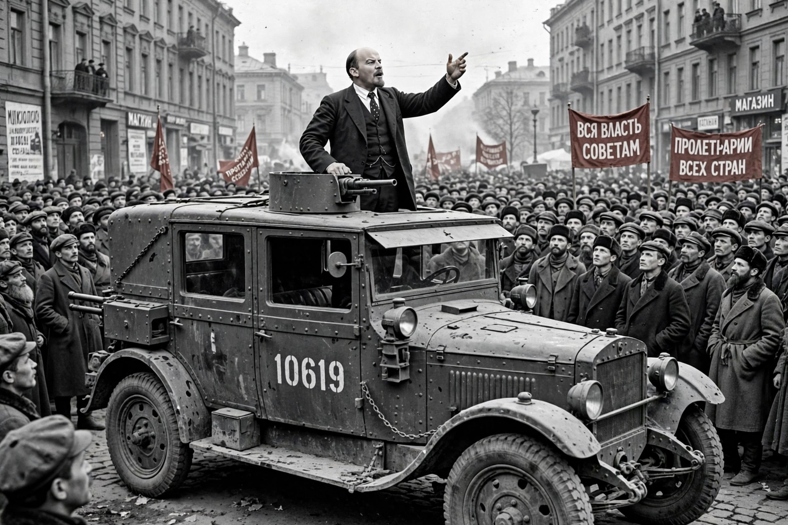

Vladimir Lenin
From Wikipedia, the free encyclopedia

Vladimir Ilyich Ulyanov (22 April 1870 – 21 January 1924), better known as Lenin, was a Russian revolutionary, politician and political theorist who founded the Soviet state. He led the Bolsheviks to power in the October Revolution of 1917, served as head of government of Soviet Russia and then the Soviet Union (1922) until his death, and developed the Marxist current named Leninism — vanguard party, imperialism theory, the right of nations to self-determination — that shaped the twentieth century's communist movements.
Path to power
A lawyer's son radicalised by his brother Alexander's execution for attempting to assassinate Alexander III (1887), Lenin was exiled to Siberia, emigrated to Europe, and in 1902–03 split Russian social democracy into Bolsheviks and Mensheviks over party organisation (What Is to Be Done?). His 1916 Imperialism, the Highest Stage of Capitalism and his defiance of orthodox stage-theory ('the chain breaks at its weakest link') armed his return in April 1917 — in the German-sealed train — to push the Provisional Government aside in October.
Rule and legacy
Lenin's government made peace at Brest-Litovsk, won the Civil War through War Communism and the Red Terror, then retreated to the New Economic Policy (1921). Strokes from 1922 removed him as Stalin accumulated the party machinery Lenin's 'Testament' belatedly warned against. Embalmed in the Mausoleum against his widow's wishes, he became the cult-object of the system he created; his legacy — revolutionary strategist and founder of a one-party state whose logic ran to terror — remains inseparable and contested.